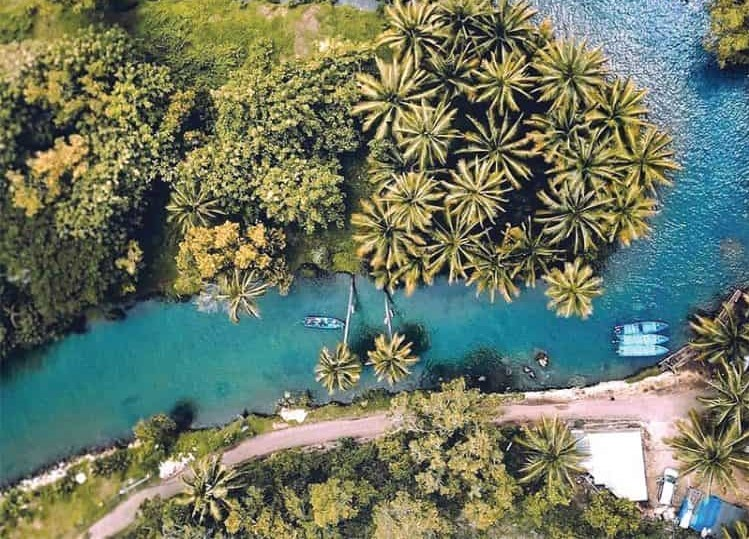
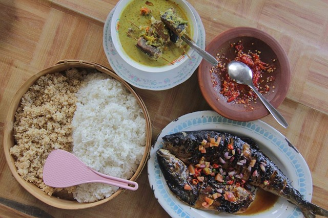

Pacitan Travel Guide By Mellow Melon
Pacitan is a district in East Java Province, Indonesia. The capital city is Pacitan. During the Dutch East Indies era, this area was called Kawedanan Pacitan which was famous for its tourist destinations. Here is the birth/remaining house of Susilo Bambang Yudhoyono (SBY), the former 6th President of the Republic of Indonesia.

Beach & Nature

Cave

Hot Spring
Culture

Food